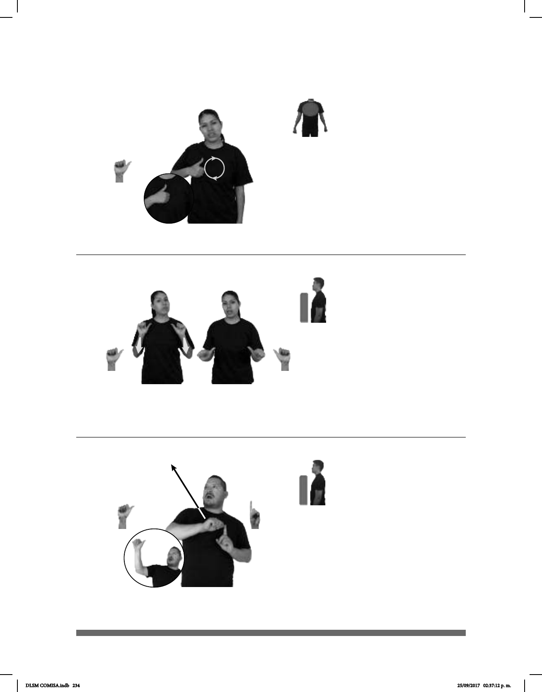

234
(A-4)
(A-5) A salvo
(A-6)
__________________________________________neg_
HOY QUÉ-LÁSTIMA pro-TÚ NO IR VIAJE TIJUANA
Qué lástima que hoy no te vas de viaje a Tijuana.
COLADERA pro-TÚ A-SALVO CAER
Estuviste a salvo de caer en la coladera.
8 HORAS
aquí
A(distancia, lugar) TIJUANA pro-YO
De aquí a Tijuana me hago ocho horas.
Seña: SM
A.1
Palma hacia adentro.
Sobre el pecho.
La mano se mueve
formando círculos.
interj. Expresa pena o
disgusto.
Seña: SS
A.1
Palmas hacia afuera.
A la altura del pecho.
Recto hacia el frente.
loc. adv. Sin detrimento
o menoscabo, fuera de peligro.
Seña: SB
MD A.4, MB 1.1
MD la palma inicia
oblicua hacia la izquierda y hacia
abajo y termina hacia afuera. MB
palma
oblicua hacia la derecha y hacia afuera.
A la altura del pecho, del
lado izquierdo. MD sobre MB.
MD recto hacia arriba y
hacia la derecha.
prep. Indica la dirección
que lleva o el término a que se
encamina alguien o algo.
DLSM COMISA.indb 234 25/09/2017 02:37:12 p. m.